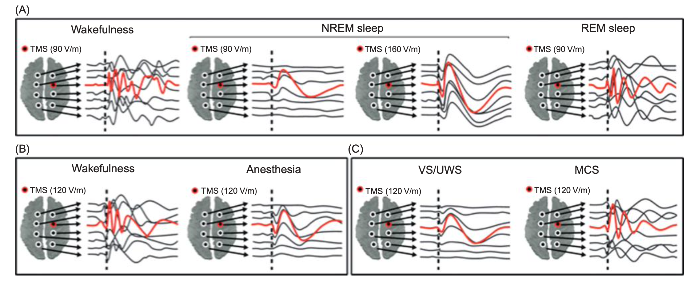

Consciousness and the Brain
Chapter 10
Consciousness and the Brain
- Neural Signatures of Consciousness
- The Evolution Of The Brain
- The Development Of Consciousness
- Incomplete Brains
- General Anaesthesia
- The Thalamus And Thalamo-cortical Loop
- Integrated Information Theory
- Radical Plasticity
- What Is Death?
- Disorders Of Consciousness
- Can We Escape Death?
Neural Signatures
Signatures of Consciousness
| Question | Signature | Method | Key Features | |
|---|---|---|---|---|
| 1st | Where | Neural Avalanche: “higher” cortex | fMRI | Cascade of activity |
| 2nd | When | P3 After 300 ms | ERP | Global cortical Inhibition Wave |
| 3rd | What | Late amplification of gamma oscillations | EEG | Enhancement of balanced excitatory/inhibitory windows |
| 4th | Why | Brain web of interacting assemblies | ECoG | Integration & connection at distance |
1st: fMRI (high space-resolution to establish WHERE)
Unconscious/Preconscious: Sensory input according to processing that is highly localized to input modality: vision (occipital lobe), hearing (superior temporal lobe), somatosensory (anterior parietal lobe), etc
Conscious processing: “all-or-nothing”, ignition, global broadcast, and re-entrant-amplified processing (Box 8.2 Cortex regions 1) Frontal, 2) inferotemporal, 3) midline/limbic, 4) (para)hippocampal , 5) Posterior Parietal)
2nd: EEG (high time-resolution to establish WHEN)
- Unconscious/Preconscious P1/N1 waves before 200ms post-stimulus, highly-localized by input modality
- Conscious processing: post-stimulus onset 200-250 ms: P300 brain wave Appears frontally initially for novel stimuli (P3a), but globally for all conscious stimuli (P3b)
3rd: (ECoG/invasive electrophysiology)
- Gamma band + Theta : local coordinated activity multiplexed with lower amplitude band
Signatures of Consciousness
| Question | Signature | Method | Key Features | |
|---|---|---|---|---|
| 1st | Where | Neural Avalanche: “higher” cortex | fMRI | Cascade of activity |
| 2nd | When | P3 After 300 ms | ERP | Global cortical Inhibition Wave |
| 3rd | What | Late amplification of gamma oscillations | EEG | Enhancement of balanced excitatory/inhibitory windows |
| 4th | Why | Brain web of interacting assemblies | ECoG | Integration & connection at distance |
4th: (ECoG/invasive electrophysiology)
- Unconscious/Preconscious: early on restricted to thamocortical locations and short distance connections in same modality
- Conscious: “Brain Web” later +300 ms indicating amplified & synchronized information across large areas of brain (dependent on coherent activity connected by cortico-cortical connections through white-matter tracts)
Electrophysiology of consciousness
- Gamma 30 - 100 Hz
- Beta 12.5 - 30
- Alpha 8 - 12.6
- Theta 4 - 7
- Delta 0.5 - 4
- Infra-slow < 0.5

Who is Conscious?
Conscious Animals
Babies and Development of Consciousness
The evolution of the brain
- Which animals are conscious?
Conscious Animals? Monkeys?
“He who understands baboons would do more for metaphysics than Locke” - Charles Darwin, Notebooks (1838)
- Do animals have consciousness even though they can’t describe it?
- Short answer, yes.Consciousness is not unique to humans.
- The dense network of connections that give rise to consciousness are found in macaque monkeys, and workspace possibly in all mammals.
- Although monkeys cannot verbally report conscious awareness, they can produce non-verbal gesture for if they consciously perceived what occured in the experiment.
- Binocular rivalry, masking, subliminal & threshold
- Litmus test of conscious auditory perception (beep beep boop) (only globally)
Self-conscious Monkeys?
- Metacognition:
- thoughts about your thoughts, known-knowns, known-unknowns, unknown-unknowns
- Macaque monkeys generalized use of opt-out key to memory task
- “escape” response on difficult tasks
Uniquely Human abilities of Consciousness
- What sets humans apart?
- Sheer Brain size? Language? Social cooperation?
Only Homo sapiens “use[s] words or other signs by composing them, as we do to declare our thoughts to others.” -Descartes
- “Language of thought”
- Perhaps language evolved as a representational device rather than communication system
- In all primates, consciousness initially evolved as a communication device
- In humans alone this was amplified by a second evolution
- Ability to formulate sophisticated beliefs and to share them
- Example: “he thinks that I do not know that he lied”
The development of consciousness
- Are babies conscious?
- “Not as conscious”
- Babies and pain
Conscious Babies?
The Great Mistake: Confusing immaturity with dysfunction
Prenatal 6 mo: Cortex begins to form & fold
Babies are largely attracted to language (Language Acquisition Device)
Dehaene Experiment:
- Use fMRI to look inside 2 month old
infants’ heads while listening to maternal language. - Language areas lit up in the brain
- even Broca’s area
- Use fMRI to look inside 2 month old
Infants language areas work, but…
- at much slower pace
Evidence of working memory: 2 months
Conscious Babies: Global Conscious Response
- Local-Global Test: repeating series of sounds to test consciousness
- Evoked P3 waves: subject has conscious access
- Dehaene and wife ran adapted test to keep toddlers attention
- Results: 2-month old babies were already emitting global conscious response to novelty
- Babies responses to test still much slower than adults
Conscious Babies: Visual Masking
- Faces shown at or near threshold of visibility
- for adults: 50 ms, for babies: 100 ms
- Difference in time gets made up by 12 months
- Frontal negativity waves in Prefrontal cortex similar to adult P3 wave
- Babies experiencing a stimulus, but can’t report it aloud
The Ultimate Test of Theories of Consciousness
Can incomplete brains be conscious?
- Anencephaly
- Hydrocephaly
A rare neurological disorder seen
that may have been sparked by RSV
Introduction
The ultimate test to theories of consciousness: the clinic
Current science of consciousness is coming close to being able to identify which patients retain a conscious life and those who do not.
Clinical interventions
- Stimulation of brain’s deep nuclei can speed up recovery of consciousness
- Brain-computer interfaces (BCI) may restore form of communication to locked-in patients who are conscious though fully paralyzed
Literary Depiction & Acknowledgment
The Count of Monte Cristo
- Alexandre Dumas - One of the first literary descriptions of locked-in syndrome (Monsieur Noirtier)
The Diving Bell And The Butterfly
- Jean-Dominique Bauby
- 21 day coma, awoke to find himself fully paralyzed except one eye and part of his head
- Conceived, memorized, dictated, and published a book (The Diving Bell and the Butterfly) on his experiences over the course of 15 months before his death
- Dictated the book one character at a time by blinking his left eyelid while and assistant recited the letters
- Imprisoned in a motionless body which he describes as a diving bell and his fully intact mind as a butterfly
Survey by the French Association of Locked-In Syndrome
A good theory of consciousness predicts why some lose consciousness & others do not
- Person who first detects consciousness in locked-in patients usually not physician
- Average duration of 2 ½ months elapses before a correct diagnosis is established, some even as late as 4 years
- signs of consciousness can literally mean life or death for crippled patients
- The field is now moving toward simpler and cheaper methods to detect consciousness
- Voluntary eye movements dismissed as reflexive
- 40% of those initially classified as unresponsive and “vegetative” turn out to present minimal consciousness
Coma: How to Lose Your Mind
- A prolonged loss of the capacity to be roused.
- The patient lies unresponsive with eyes closed.
- No amount of stimulation can awaken them and they show no signs of awareness of self or environment.
How Neurologists Distinguish
Coma from Brain Death
Brain Death
- Total absence of brainstem reflexes.
- Positron Emission tomography (PET) and other measures show that cortical metabolism and perfusion of blood to the brain are annihilated.
- Cortical and thalamic neurons quickly degenerate and melt away, erasing all lifelong memory that define a person
Coma
- EEG of coma patients continue fluctuation at a slow rate, producing low-frequency waves
- Many cortical and thalamic cells are still alive & active but in an inappropriate network state for wakefulness.
Neurological Disorders
Vegetative state
- preserved sleep wake cycle with no signs of consciousness.
- The patient breathes spontaneously when fed artificially does not die.
- Ex. Terri Schiavio
Minimally conscious state
- Rare, inconsistent and limited response residual comprehension and volition
- Unlike vegetative patient who smiles or cries at random times, minimally conscious patient may also express emotions that are appropriately linked to the current context
Coma Recovery Scale
- A series of objective bedside tests - applied in a precisely controlled manner.
- Using this scale the medical team can distinguish between a vegetative patient and minimally conscious one with much greater accuracy.
Locked in syndrome
- Brainstem lesion disconnects cortex from spinal cord output pathways
- Cortex & thalamus spared: consciousness entirely intact
- Individuals suffering from locked-in-syndrome are fully conscious
Levels of Conscious: Coma, Sleep Stages, & Wakefulness
Levels of Conscious: Cellular States

The thalamus and thalamo-cortical loop
- All point to the role of the thalamus in (un-)consciousness
- Are NCC frontal or posterior?
- Resonance in the thalamo-cortical loop
- Re-entry and the dynamic core hypothesis
Integrated information theory (IIT)
- Consciousness is information being linked and integrated
- Tononi
- Phi (φ) as a measure
Radical plasticity
- Cleeremans
- Our neural system has to learn to become conscious
- Prediction of Bodily, Affective, and Cognitive States
Summary
- There are neural correlates of consciousness
- The thalamo-cortical loop plays an important role in consciousness
- #464E59
- #31403E
- #BCBFAE
- #8C8981
- #F2F2F2
- #D9D1C7
- #A4B8AD
- #3C4951
- #799686